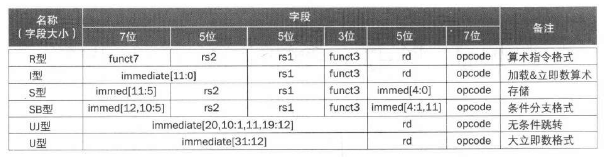

计算机组成期末复习
Last updated on June 10, 2025 pm
这是SJTU-ICE2603《计算机组成》课程的期末复习。
简答题关键词：性能、功耗、成本、容量、速度、可靠性、并行
第一章 计算机的抽象与技术
1. 当前计算机发展的现状、所处的阶段及与过去的区别
- 后 PC 时代的特征：
- 个人移动设备替代个人电脑
- 电池供电
- 无线连接互联网
- 价格低
- 云计算接替传统服务器
- 仓储级计算机
- 软件即服务（在本地和云上各运行一部分软件）
- 个人移动设备替代个人电脑
2. 程序性能及评价的方法
- 程序性能的影响因素：
- 算法：决定了语句和执行 I/O 操作的数量
- 编程语言、编译器和体系结构：决定了每条语句对应的机器指令数量
- 处理器和存储系统：决定了指令的执行速度
- I/O 系统：决定了 I/O 操作的执行速度
- 性能的衡量指标：执行时间（或吞吐量）
- 时间是唯一对计算机性能进行测量的完整而可靠的指标
- 算法、编程语言、编译器：影响指令数和 CPI
- 指令集体系结构：影响指令数、CPI 和时钟频率
- 时间是唯一对计算机性能进行测量的完整而可靠的指标
- 基准测评程序（benchmark）：
- 不同指令架构需使用对应编译的测试集
- 通常用高级语言编写，依赖编译器优化生成高效代码
- 广泛应用于计算机性能评估
- 性能的提升方法：
- 并行：
- 数据级并行：子字并行
- 指令级并行：多指令发射和乱序执行（循环展开）
- 线程级并行：多核硬件（循环并行）
- 存储层次：高速缓存分块技术
- 流水线、预测
- 并行：
3. 8 个伟大的思想所指代的意义
- 面向摩尔定律设计
- 使用抽象简化设计
- 加速经常性事件
- 通过并行提高性能
- 通过流水线提高性能
- 通过预测提高性能
- 存储层次
- 通过冗余提高可靠性
4. 计算机的组成部分
- 软件：
- 系统软件：操作系统、编译器、加载程序、汇编器等
- 应用软件：数据库系统等
- 硬件：输入部件、输出部件、存储器、数据通路（运算器）、控制器
- 数据通路和控制器构成了处理器
▶
补充：普林斯顿架构 和 哈佛架构 的对比
普林斯顿架构（冯·诺伊曼架构）
- 特点
- 统一存储体：指令和数据存放在同一存储器中，均以二进制形式存储
- 统一编址：内存和 I/O 端口共享唯一的地址空间
- 共享总线：指令和数据通过同一总线传输，按地址逐行存取
- 优点
- 设计简单：硬件结构单一，复杂度低
- 灵活性强：存储器空间动态分配；程序可动态修改自身代码
- 成本低：节省硬件资源
- 缺点
- 性能瓶颈：指令取指与数据存取无法并行，效率受限
- 安全性风险：指令与数据混存可能导致程序被意外修改
哈佛架构
- 特点
- 分离存储体：指令存储器和数据存储器物理隔离，独立编址
- 独立总线：指令和数据通过不同总线传输，支持并行访问
- 优点
- 高并行性：指令与数据并行存取，消除总线竞争，提升执行速度
- 安全性高：代码与数据隔离，防止程序被篡改
- 实时性强：适用于嵌入式系统和高吞吐量场景
- 缺点
- 硬件复杂：需独立的总线和存储控制器
- 灵活性差：指令与数据存储器容量固定；程序无法动态修改自身代码
- 成本高：需要更多硬件资源
小结
| 对比维度 | 普林斯顿架构 | 哈佛架构 |
|---|---|---|
| 存储体设计 | 指令与数据共享存储体 | 指令与数据分离存储体 |
| 总线类型 | 单一总线，分时复用 | 独立指令总线和数据总线 |
| 性能瓶颈 | 存在冯·诺依曼瓶颈 | 并行访问，无总线竞争 |
| 典型应用 | 通用计算机（如PC、服务器） | 嵌入式系统、DSP、物联网设备 |
| 成本与复杂度 | 低 | 高 |
5. 指令集体系结构（ISA）
- 指令集体系结构（ISA）：硬件和底层软件之间的接口
- 包含了编写二进制机器语言程序所需的全部信息，如指令、I/O 设备等
6. CPI、降低功耗的方法
- CPI：算法、编程语言、编译器、ISA、硬件都会影响 CPI
- 降低功耗的方法：
- 硬件：降低时钟频率、降低电压、采用低功耗器件（如漏电流更小的晶体管）
- 软件：优化算法、编译器优化等
7. 单处理器和多处理器
- 多核处理器：一个芯片上有多个处理器
- 需要显式地并行编程，挑战在于提高性能、负载均衡、通信和同步
第二章 计算机的语言
1. 指令集，CISC 和 RISC，RISC-V
- 指令集：一台计算机的全部指令
- CISC 和 RISC：
| 对比项目 | CISC | RISC |
|---|---|---|
| 指令系统 | 复杂，庞大 | 简单，精简 |
| 指令数目 | 一般大于 200 条 | 一般小于 100 条 |
| 指令字长 | 不固定 | 定长 |
| 可访存指令 | 不加限制 | 只有 LOAD / STORE 指令 |
| 各种指令执行时间 | 相差较大 | 绝大多数在一个周期内完成 |
| 各种指令使用频度 | 相差很大 | 都比较常用 |
| 通用寄存器数量 | 较少 | 多 |
| 目标代码 | 难以用优化编译生成高效的目标代码程序 | 采用优化的编译程序，生成代码较为高效 |
| 控制方式 | 绝大多数为微程序控制 | 绝大多数为组合逻辑控制 |
| 指令流水线 | 可以通过一定方式实现 | 必须实现 |
- RISC-V 的特点：定长指令、精简指令集、32 个 通用寄存器
2. 指令，操作数、寄存器、立即数、有符号、无符号、符号扩展，不同进制的数值转换
- 指令：RISC-V 的常见指令

-
操作数：
- 寄存器操作数：32 个 64 位寄存器（字表示 32 位）
- 存储器操作数：内存按字节编址，小端模式存储，无对齐限制
- 小端模式：低位字节位于字中的低地址
- 立即数操作数
-
数字的表示：
- 有符号整数：，表示范围：
- 有符号数取负：按位取反再加 1
- 符号扩展：把符号位复制到左边
3. 指令集设计的原则：RISC-V 的各种指令类型、寻址模式和基本的算术运算
- 指令集设计原则：
- 简单源于规整：易于实现，成本更低，性能更高
- 更少则更快：过多的存储器会增加时钟周期
- 优秀的设计需要适当的折中
- RISC-V 的指令类型：

- 寻址模式：立即数寻址、寄存器寻址、基址寻址、PC 相对寻址
- PC 相对寻址：目标地址 = PC + 立即数 × 2
4. 指令简单分类，了解简单程序编程，子程序调用方法和堆栈操作
- 指令的简单分类：数据传输指令、算术运算指令、逻辑运算指令、移位运算指令、条件分支指令、无条件跳转指令
- 简单程序编程：分支结构、循环结构
- 子程序调用方法：将参数放在过程可以访问到的位置 获取过程所需的存储空间 执行过程中的操作 将结果值放在调用程序可以访问到的位置 将控制返回到初始点
- 过程调用：将下一条指令的地址（PC + 4）保存在 中，跳转到目标地址
1
jal x1, ProcedureLabel - 过程返回：跳转到 0 + 中保存的地址，把 用作目的寄存器
1
jalr x0, 0(x1) - 寄存器约定：
- ：参数寄存器，用于传递参数或返回值
- ：返回地址寄存器，用于返回到起始点
- ，: 临时寄存器，被调用者不需要保留其中的值
- ，: 保存寄存器，如用到这些寄存器，被调用者需先保存原值，用完再恢复原值
- 过程调用：将下一条指令的地址（PC + 4）保存在 中，跳转到目标地址
- 堆栈操作：
- 栈指针（ 或 ）指向栈顶
- 帧指针（ 或 ）指向帧的第一个双字
- 注意，栈向低地址方向扩展
5. 常量的使用、同步指令
- 32 位常量：加载 20 位常量到 rd[31:12]，符号扩展 rd[63:32]，将 rd[11:0] 清零
1 | |
- 同步指令：两个处理器共享存储器中的某一位置
- 预留取数：
1
lr.d rd,(rs1)- 从地址 rs1 处取数，保存到 rd
- 对内存地址设置预留
- 条件存数：
1
sc.d rd,rs2,(rs1)- 将 rs2 的内容保存到地址 rs1
- 如果从
lr.d之后该位置没有被更改则执行成功，在 rd 中返回 0 - 如果该位置被更改则执行失败，在 rd 中返回非 0 值
- 预留取数：
6. RISC-V 的指令集相对于 x86 的优点
- 更能充分利用芯片面积：CISC 采用微程序控制，其控制存储器占 CPU 芯片面积的 50% 以上；而 RISC 采用组合逻辑控制，其硬布线逻辑只占 CPU 芯片面积的 10% 左右。
- 运算速度快：RISC 的指令数、寻址方式和指令格式种类少，又设有多个通用寄存器，采用流水线技术，所以运算速度更快，大多数指令在一个时钟周期内完成。
- 便于设计、成本低、可靠性高：RISC 指令系统简单，因此机器设计周期短；其逻辑简单，出错概率低，有错也易发现，因此可靠性高。
- 有利于编译程序代码优化：RISC 指令类型少，寻址方式少，使编译程序容易选择更有效的指令和寻址方式，并适当地调整指令顺序，使得代码执行更高效化。
7. 编译器，汇编器有关的概念
- 编译器：将高级语言程序转换为汇编语言程序（或直接生成目标模块）
- 汇编器：将汇编语言程序转换为目标模块
- 目标模块(.o)的组成：
- 头：描述目标模块的内容
- 代码段：翻译后的指令
- 静态数据段：分配的数据，作用于程序生命周期
- 重定位信息：依赖于程序加载的绝对地址的内容（用于加载程序）
- 符号表：匹配标签名和指令所在地址及外部引用（用于链接模块）
- 调试信息：用于关联到源代码
第三章 计算机的算术运算
1. 数字的计算机表达方法
- 整数和浮点数的表示：见其他部分
2. 整数的运算：加法和减法、乘法和除法处理溢出
- 上溢：一个数字的绝对值过大，超出数据类型的表示范围
- 下溢：一个数字的绝对值过小，无法在给定的精度下表示
- 加法和减法的溢出判断：
| 操作 | 操作数 符号 | 操作数 符号 | 溢出条件（结果符号） |
|---|---|---|---|
- 乘法和除法的溢出处理：
- 乘法：用
mulh/mulhu的结果来检查 64 位的溢出 - 除法：不产生错误，只返回预先定义的结果
- 乘法：用
3. 浮点实数：表示及运算
- 浮点数的表示：
-
规格化的科学计数法：
-
IEEE 浮点格式：
类型 符号位 指数位 尾数位 偏阶 单精度（32位） 1 8 23 127 双精度（64位） 1 11 52 1023 - ：符号位（0 非负数，1 负数）
- 规格化二进制数的前导位 1 是隐含的，即有效位数是 24 或 53 位
- 指数 = 实际指数 + 偏阶
-
- 浮点数的加法：
- 步骤：
- 对齐二进制小数点（右移指数小的数）
- 将有效数字相加
- 规格化结果并检查上溢 / 下溢
- 舍入，如有需要再次规格化
- 通常占几个周期，可流水线化
- 步骤：
4. 了解算术运行的硬件实现方法和特点
- 加法：通过超前进位加法器可分解为独立阶段，支持流水线化
- 减法：通过补码转为加法实现，同样支持流水线化
- 乘法：
-
串行乘法器：
-
快速乘法器：每个乘数位提供一个 64 位加法器，可流水线化

-
- 除法：
-
除法器：
-
无法并行：减法取决于余数的符号，不能流水线化
-
SRT 除法：可以通过预测多位商再纠正错误的方法来加速
-
5. RISC-V 的算术运行指令
- RISC-V 乘法指令：
| 指令 | 功能描述 |
|---|---|
mul |
取乘积低 64 位 |
mulh |
有符号乘法取高 64 位 |
mulhu |
无符号乘法取高64位 |
mulhsu |
有符号 × 无符号取高 64 位 |
- RISC-V 除法指令：
| 指令 | 功能描述 | 指令 | 功能描述 |
|---|---|---|---|
div |
有符号除法 | divu |
无符号除法 |
rem |
有符号取余 | remu |
无符号取余 |
- RISC-V 浮点指令：
6. 子字并行，SIMD
- 子字并行：在一个宽字内部进行的并行操作
- 如：在 128 位加法器内并行操作 16 个 8 位操作数
- 用于图像和音频应用对短向量的同时运算
- 又称数据级并行、向量并行、SIMD (单指令多数据)
7. 结合律问题
- 浮点加法不满足结合律：
- 原因：浮点算术精度有限
- 结果；并行计算机可能按不同顺序计算，导致不同结果
8. 运算精度和表达范围
- 浮点表示范围：
- 指数全 0 和全 1 为保留值
- 单精度：
- 双精度：
- 浮点精度：
- 单精度：约
- 双精度：约
第四章 处理器
1. RISC-V 的实现方法（单周期实现，流水线实现）
- 做过实验了这个应该都会吧～
2. 指令的执行过程，时序电路和组合电路
- 指令的执行过程：
- 根据当前 PC 值取指
- 读取寄存器
- 用 ALU 计算
- 算术运算结果
- 用于取数 / 存数的存储器地址
- 分支比较
- 访问数据存储器以取数 / 存数
- PC + 4 或 指向目标地址
3. 数据通路，ALU，控制单元
- 数据通路：
- ALU：算术逻辑单元，是组合逻辑电路
- 控制单元：从指令得到控制信号，是组合逻辑电路
4. 单周期实现的性能问题
- 时钟周期过长：为满足最长指令路径，导致周期过长
- 违反设计原则：加速大概率事件
- 扩展性差：无法支持浮点运算等复杂指令
- 吞吐量低：CPI = 1 但周期过长，实际吞吐量低
5. 流水线的加速比，设计方法和指导原则
- 流水线加速比：等于流水线级数（各级耗时相同且大量指令）
- 若不平衡，时钟周期取决于最慢的操作
- 通过提高吞吐量来提高性能
- 面向流水线设计：指令长度相同、格式规整、存储器操作数只在 load / store 指令中
- 指导原则：加速大概率事件、指令级并行
6. 五级流水线的实现方法，指令运行多周期流水图
- 五级流水线：
- IF：从指令存储器中读取指令
- ID：指令译码以及读寄存器
- EX：执行操作或计算地址
- MEM：访问存储器操作数（如有）
- WB：将结果写回寄存器（如有）
- 实现：
- 增加各级间寄存器（用于保持前一周期产生的信息）
- 保留目标寄存器号

7. 流水线的控制，指令冒险和解决方法
- 结构冒险：
- 原因：所需资源正被占用
- 举例：第一条指令从存储器取数据的同时，第四条指令从同一存储器取指令
- 策略：分离指令和数据存储器或 cache（采用哈佛架构）
- 数据冒险：
- 原因：需要等待先前的指令完成数据读写
- 举例：一条加法指令后面紧跟着一条使用其结果的减法指令
- 策略：
- 旁路（前推）：当算出结果就直接使用，不等到结果被存入寄存器
- 取数-使用型数据冒险：无法靠旁路来避免阻塞，需要阻塞 1 个周期（或重排代码解决）
- 阻塞方法：
- 强制将 ID/EX 寄存器中的控制信号置 0
- 阻止 PC 和 IF/ID 寄存器更新
- 控制冒险：
- 原因：对控制行为的决策依赖于先前的指令
- 举例：需要根据分支结果取得下一条指令
- 策略：
- 分支预测
- 简单方法：预测分支不发生
- 静态预测：基于典型的分支行为
- 动态预测：保存每个分支的历史记录并据此预测未来
- 分支预测缓存：按分支指令地址索引，保存分支结果
- 2位预测：仅在连续两次预测错误时改变
- 分支目标缓存：使用一个缓存来保存目标地址
- 缩短分支延迟：将用于确定分支结果的硬件移到 ID 级，此时预测错误只需要阻塞 1 个周期
- 阻塞方法：使用 IF.Flush 清空 IF/ID 寄存器中的指令字段
- 分支预测
8. 提升流水线性能的方法
- 增加流水线级数：时钟周期更短，吞吐量更高
- 平衡各段延迟：拆分长周期阶段，最慢阶段决定整体频率
- 编译器辅助优化：重排代码，减少流水线停顿；循环展开，提高并行度
- 多发射技术：指令级并行，超标量、超长指令字
9. 异常处理和中断机制对流水线运行的影响
- 异常处理：
- 保存发生异常的指令地址：SEPC（系统异常程序计数器）
- 记录异常发生的原因：SCAUSE（系统例外原因寄存器）
- 跳转到处理程序：
- 操作系统读取异常原因，并跳转相应处理程序
- 决定采取的动作，如重启程序或终止程序
- 向量式中断（另一种方式）：
- 处理程序的地址由中断原因决定（基址寄存器加上异常原因偏移）
- 对流水线运行的影响：
- 清除流水线中之后的指令
- 将例外入口地址送给 PC 寄存器
- 将引发异常的指令地址保存在 SEPC 寄存器中
10. 指令级并行，多发射，多发射多周期流水图
- 多发射：一个时钟周期内发射多条指令
- 静态多发射：由编译器来支持指令打包和处理冒险
- 超长指令字：将指令分组为发射包
- 动态多发射：即超标量，由硬件来判断当前周期发射的指令数
- 执行过程：取指和译码单元（按序发射）、功能单元（乱序执行）、提交单元（按序提交）
11. 循环展开，推测执行、态调度等技术与编译器和运行功耗等的关联
- 循环展开：一种编译技术，复制循环体以展现更高的并行度
- 寄存器重命名：避免循环带来的反相关
- 推测执行：允许编译器或处理器猜测指令的行为，并允许其他与被推测指令相关的指令提前开始执行
- 要检查预测结果是否正确；若预测错误，要进行恢复
- 编译器推测：根据推测结果重排指令，可以包含从错误中恢复的指令
- 硬件推测：缓存结果，直至确定结果正确；若推测错误，则清除缓存
- 静态调度：编译器必须消除部分或全部冒险
- 动态调度：用硬件对指令执行顺序进行重排，避免了对编译器调度的需求
- 不是所有的流水线停顿都能静态预测、无法总是对分支做静态调度
- 与运行功耗的关联：循环展开、推测错误、动态调度都会增大功耗
第五章 存储器层次结构
1. 局部性原理，存储器层级结构
- 时间局部性：如果某个数据项被访问，那么在不久的将来它可能再次被访问
- 空间局部性：如果某个数据项被访问，与它地址相邻的数据项可能很快也将被访问
- 存储器层次结构：磁盘 主存储器 (DRAM) cache (SRAM)
- 特点：离处理器越近，访问速度越快，价格越昂贵，容量越小
- 目的：以最低的价格为用户提供最大容量的存储，同时访问速度与最快的存储相当
2. 存储分类及使用上的特点
- SRAM：易失性，用于高速缓存，不需要刷新
- DRAM：易失性，用于主存，需要周期性刷新
- 具有行缓冲器，支持突发传输
- 闪存：非易失性，写操作会对器件本身产生磨损（耗损均衡）
- 磁盘：非易失性，柱面、盘面、扇区
3. 高速缓存存储器（直接映射、组相联、全相连；标记、有效位，块，命中，缺失；写直达，写回，写分配，写不分配）
- 地址映射方式：
- 直接映射：每个存储地址都被直接映射到 cache 中的确定位置
- cache 块号：由
块地址 % cache块数决定
- cache 块号：由
- 全相连映射：数据块可以存放在 cache 的任意位置
- 比对方式：每次搜索所有的项
- 组相连映射：每个数据块在 cache 中有 n 个位置可放
- cache 组号：
块地址 % cache组数 - 比对方式：每次搜索给定组的所有项
- cache 组号：
- 直接映射：每个存储地址都被直接映射到 cache 中的确定位置
- cache 数据块：
- 索引：用来选择数据块（块地址低位）
- 标记：记录块地址信息（块地址高位），用于确定所需数据块是否在 cache 中
- 有效位：表示该表项中是否保存了有效数据
- 写策略：
- 写直达：同时更新 cache 和主存，需写缓冲降低延迟
- 写缺失处理：写分配（取入 cache 并更新）、写不分配（只更新主存）
- 写回：仅更新 cache，替换时写回主存，需脏位标记修改过的块
- 写缺失处理：通常写分配（取入 cache 并更新）
- 写直达：同时更新 cache 和主存，需写缓冲降低延迟
4. Cache 性能的度量（平均访问时间，缺失代价；对程序性能评估时的影响）
- 平均访问时间：
- 缺失代价：
- 强制缺失：首次访问一个块时
- 容量缺失：由于 cache 的大小有限，被替换掉的块随后又被访问到
- 冲突缺失：在非全相连 cache 中，很多块为了竞争同一个组导致的缺失
- 对性能评估的影响：降低缺失代价或缺失率，可以提高性能
5. Cache 的替换规则，多级 Cache 的设计目标
- 替换规则：
- 随机替换
- 最近最少使用（LRU）：优先替换最久未访问的块
- 多级 cache 的设计目标：降低缺失代价
- 一级 cache：侧重于最小命中时间，以提高工作频率
- 二级 cache：侧重于低缺失率，避免访问主存储器
6. 与高级 CPU、算法等的交互作用影响（如何充分发挥 Cache 的作用）
- 与高级 CPU 的交互作用：
- 乱序执行 CPU 能在 cache 缺失期间执行指令
- 缺失造成的影响取决于程序的数据流动，需要进行系统仿真
- 与算法的交互作用：
- 缺失取决于存储器的访问模式，包括算法行为和编译器优化
- 如何充分发挥 cache 的作用：使用乱序执行 CPU、算法优化、编译器优化、循环展开
7. 可信度、可靠性
- 可靠性：系统能够持续提供用户需求的服务的度量
- 度量方法：平均无故障时间（MTTF，mean time to failure）
- 平均修复时间（MTTR，mean time to repair）
- 平均失效间隔时间（MTBF，mean time between failures）
- 可用性：系统正常工作时间在连续两次服务中断间隔时间中所占的比例
8. 虚拟机技术，存储器保护技术
- 虚拟机作用：更好地隔离多客户、避免安全性和可靠性问题、有助于资源共享
- 虚拟机监视器：支持虚拟机的软件
- 将虚拟资源映射到物理资源、隔离客户端状态
- 控制特权态的访问、I/O、异常和中断等
- 指令集支持：分为用户模式和系统模式
- 特权指令仅在系统模式下可用（用户状态下会内陷）
- 所有物理资源只允许用特权指令访问
- 存储器保护技术：
- 不同任务可以共享其部分虚拟地址空间，但要防止不当访问
- 页表和其他状态信息只在超级用户模式下可访问
9. 虚拟存储器（地址转换、页，页表、缺页、缺页代价、缺页处理；页表的控制、存储和组织；TLB，TLB 的缺失及处理方法，TLB 与 Cache 的关系）
- 虚拟存储器：将主存储器作为辅存的 cache 使用
- 地址转换：CPU 和 OS 将虚拟地址转换为物理地址
- 虚拟地址：高位为虚拟页号，低位为页内偏移
- 物理地址：高位为物理页号，低位为页内偏移
- 页表：位于内存中，保存着虚拟页号和物理页号之间的转换关系
- 缺页代价：缺页时必须从磁盘取这一页
- 缺页处理：CPU 中断后 OS 处理（对比 cache 缺失由硬件处理）
- 页表：页表项构成的数组，按虚页号索引
- 有效位为有效：页表项存储物理页号及其他状态位（引用位、脏位等）
- 有效位为无效：页表项指向它在磁盘交换区中的位置
- 替换策略：最近最少使用（LRU），降低缺页率
- 写策略：写回策略，原因是写磁盘时间开销大
- 快表（TLB）：页表的 cache，记录最近使用的地址映射信息，避免每次访问页表
- TLB 缺失：
- 页在内存中：从内存读页表项，更新 TLB，然后重试
- 页不在内存中：OS 进行取页并更新页表，然后重启引起缺页的指令
- TLB 和 cache 的关系：
graph TD
A[虚拟地址] --> B{TLB命中?}
B -- 是 --> C[获取物理地址]
B -- 否 --> D[查页表]
D --> E{页在内存?}
E -- 是 --> F[更新TLB并获取物理地址]
E -- 否 --> G{主存有空闲页?}
G -- 否 --> H[磁盘页读入主存]
G -- 否 --> I[选一页替换]
I --> H[页读入主存]
H --> J[更新页表和TLB]
C --> K[cache命中?]
F --> K[cache命中?]
K -- 是 --> L[读cache数据]
K -- 否 --> M{cache有空闲块?}
M -- 是 --> N[主存块读入cache]
M -- 否 --> O[选一块替换]
O --> N[主存块读入cache]
N --> L[读cache数据]
10. Cache 一致性定义，Cache 一致性协议
- cache 一致性定义：
- 非正式定义：读操作返回最新写入的值
- 正式定义：
- P 写 X，P 读 X（其间没有写操作），那么读操作返回写操作的值
- P1 写 X， P2 读 X（充分长时间后），那么读操作返回写操作的值
- P1 写 X，P2 写 X，那么所有处理器看到的写操作顺序相同
- cache 一致性协议：
- 监听协议：每个 cache 监视总线的读/写
- 写无效协议：cache 要写一个块时，获得独占访问；写入时使得其他 cache 中的副本无效
- 基于目录的协议：cache 和存储器记录一个目录中块的共享状态
- 监听协议：每个 cache 监视总线的读/写
11. 存储器一致性问题
- 存储器一致性问题：写入值何时可以被其他读取操作看到
- 直到所有处理器都看见一个写操作时，写操作才完成
- 处理器不会重排写操作的顺序（但可以重排读操作的顺序）
12. DGEMM 算法的优化方案
- 目标：在数据被替换之前尽量多用到
- 优化方法：分块放入 cache 运算
第六章 从客户机到云的并行处理器
1. 多处理器：伸缩性、可用性、功耗效率
- 伸缩性：计算能力提升以处理更大规模任务
- 可用性：单个处理器故障时，其余处理器可继续提供服务
- 功耗效率：相同计算任务，多核协作比单核高频运行更省电
2. 任务级（进程级）并行、并行处理程序
- 任务级（进程级）并行：运行多个相互独立的任务，能提高吞吐量
- 并行处理程序：多个处理器上运行单个程序
3. 多核微处理器
- 多核微处理器：包含多个处理器（核）的微处理器
4. 并行处理的软硬件分类方法（串行、并行；顺序、并发）
- 硬件分类：
- 串行：每个时钟周期只执行一条指令
- 并行：通过多处理器或超标量等设计同时执行多条指令
- 软件分类：
- 顺序：程序指令按先后次序执行，如矩阵乘法 / 编译器
- 并发：程序包含多个可独立调度的执行单元，如操作系统
- 顺序/并发软件可运行于串行/并行硬件
5. 并行处理的指令与数据流分类方法
- SISD：单指令流单数据流，如单处理器
- SIMD：单指令流多数据流，数据级并行，如向量处理器
- MISD：多指令流单数据流，没有实例
- MIMD：多指令流多数据流，线程/进程级并行，如多核 CPU、集群
6. 并行编程，强比例缩放和弱比例缩放
- 并行编程的困难：调度和划分、均衡负载、通信开销
- 强比例缩放：保持问题规模不变时所测量的加速比，提升困难
- 弱比例缩放：问题规模与处理器的数量成比例增长时所测量的加速比
7. SPMD、SIMD、MIMD（向量处理器；多媒体扩展）
- SPMD：单程序多数据流，即单个程序运行在所有处理器上，属于 MIMD
- 向量处理器：高度流水的功能单元，每个向量寄存器包含多个数据元，属于 SIMD
- 优势：降低指令带宽、减少流水线停顿、简化数据并行编程、减少数据冒险的硬件检查、可通过交叉存储器降低访存开销、降低功耗和能耗、避免循环导致的控制冒险
- 多媒体扩展：与向量处理器类似，但不支持按步长存取、操作数量少
8. 多线程（粗颗粒度、细颗粒度、同时多线程）
- 细粒度多线程：在每个时钟周期之后切换线程
- 能隐藏停顿造成的吞吐量损失，但单个线程执行速度减慢
- 粗粒度多线程：仅在长时间阻塞时切换线程（如末级 cache 缺失）
- 不会减慢单个线程的执行速度，但无法隐藏短阻塞，降低吞吐量损失有限
- 同时多线程（SMT）：多发射和动态调度多线程指令
- 充分利用并行功能单元、动态调度解决相关性问题
- 线程级并行、指令级并行
9. 共享内存多处理器（SMP）：UMA、NUMA，锁变量
- 共享内存多处理器：为所有处理器提供统一物理地址空间
- 存储器访问时间：
- UMA（统一内存访问）：访存延迟不依赖于是哪个处理器的请求
- NUMA（非统一内存访问）：访存延迟取决于哪个处理器访问哪个存储
- 同步机制：用锁来同步共享变量，同一时刻仅允许一个处理器访问数据
10. CPU 和 GPU 的工作原理及异同
- 工作原理：高度并行化，是由多线程 SIMD 处理器组成的 MIMD
- GPU 与 CPU 的异同：
- 都含有计算单元、存储单元和控制单元，但 GPU 的计算单元更多，存储单元和控制单元简化
- CPU 面向低延迟设计，有强大的 ALU、大容量 cache、复杂的控制逻辑
- GPU 面向高吞吐设计，cache 容量小，控制逻辑简单，ALU 能耗低
希望大家考试取得好成绩！
计算机组成期末复习
https://cny123222.github.io/2025/06/06/计算机组成期末复习/